Bước 1: Rửa sạch và lau khô tay
Đầu tiên, bạn cần rửa thật sạch hai tay
bằng xà phòng sát khuẩn.
CARAS cũng đã làm một video hướng dẫn chi tiết. Bạn có thể bấm play và biến đôi mắt của mình trở nên lung linh hơn nào.
Đầu tiên, bạn cần rửa thật sạch hai tay
bằng xà phòng sát khuẩn.
Bạn hãy đặt lens lên ngón tay trỏ/cây đeo và quan sát. Lens đúng chiều là khi viền ngoài của lens hướng lên. Nếu viền rũ xuống bạn hãy lật lens để đổi mặt
Nhẹ nhàng kéo mí mắt dưới xuống. Giữ cho mắt mở to nhất có thể, liếc mắt lên trên và đặt lens vào.
Sau khi đặt lens lên mắt, đảo tròng mắt xuống vị trí có lens thì chớp và đảo mắt các hướng để lens khơp vào tâm mắt là hoàn thành bước đeo lens.
*Cẩn thân: không bao giờ dùng nước máy hoặc nước muối để rửa kính áp tròng
Đầu tiên bạn hãy dùng ngón trỏ để kéo nhẹ phần mi mắt bên dưới xuống
Tiếp theo bạn hãy liếc tròng mắt hướng lên trên. Đồng thời sử dụng ngón trỏ hoặc dụng cụ đeo lens đẩy lens xuống phía dưới
Bây giờ bạn chỉ cần tháo lens ra khỏi mắt bằng tay hoặc dụng cụ đeo lens.
*Lưu ý: không được sử dụng móng tay để tháo lens. Tốt nhất bạn nên cắt móng tay trước khi đeo và tháo lens.
Khi đã hoàn tất việc tháo lens bạn hãy đặt ngay lens vào dung dịch để bảo quản lens.
Tiếp tục thực hiện với mắt còn lại và hãy nhớ nhỏ mắt sau khi tháo lens nhé.
*Cẩn thân: khi tháo kính áp tròng ra cần bỏ ngay vào khay đựng tránh tình trạng bị nhiễm trùng lens
Nếu bạn muốn một đôi mắt vừa xinh đẹp vừa khỏe mạnh. Đừng bỏ qua lưu ý này nhé.
Luôn thay dung dịch bảo quản mới sau mỗi lần sử dụng lens. Nếu bạn ít dùng lens thì vẫn phải thay dung dịch mới mỗi 3 ngày 1 lần .
Nếu có móng tay, bạn nên sử dụng que đeo và kẹp gắp lens để hỗ trợ việc đeo/tháo nhằm đảo bảo vệ sinh và an toàn cho lens cũng như cho đôi mắt.
Không phải nhỏ mắt thường nào cũng sử dụng được cho lens, bạn nên hỏi kĩ thông tin từ dược sĩ trước khi sử dụng. Và lời khuyên cho bạn là hãy nên dùng nhỏ mắt chuyên dụng cho lens để có được trải nghiệm sản phẩm chính xác và tốt nhất có thể.
Các sản phẩm kính áp tròng thông thường trên thị trường có thời lượng sử dụng không quá 8giờ/ngày. Và không được đeo kính để ngủ qua đêm
Môi trường Việt Nam khá ô nhiễm và bụi bẩn. Vì vậy, nếu bạn chạy xe ngoài đường, bạn cũng nên đeo thêm một chiếc kính gọng để bảo vệ mắt tốt nhất.
Nếu như kính của bạn không tự di chuyển vào tâm của mắt thì bạn hãy nhắm mắt lại, sau đó dùng ngón trỏ xoa và di chuyển nhẹ nhàng thành vòng tròn trên mi mắt để lens di chuyển vào đúng vị trí.
Nếu như kính của bạn không tự di chuyển vào tâm của mắt thì bạn hãy nhắm mắt lại, sau đó dùng ngón trỏ xoa và di chuyển nhẹ nhàng thành vòng tròn trên mi mắt để lens di chuyển vào đúng vị trí.
Nếu như kính của bạn không tự di chuyển vào tâm của mắt thì bạn hãy nhắm mắt lại, sau đó dùng ngón trỏ xoa và di chuyển nhẹ nhàng thành vòng tròn trên mi mắt để lens di chuyển vào đúng vị trí.
Nếu như kính của bạn không tự di chuyển vào tâm của mắt thì bạn hãy nhắm mắt lại, sau đó dùng ngón trỏ xoa và di chuyển nhẹ nhàng thành vòng tròn trên mi mắt để lens di chuyển vào đúng vị trí.